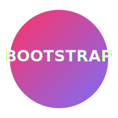

Skill
Bootstrap
Bootstrap ek powerful front-end framework hai jo responsive aur mobile-first web development ke liye use hota hai. Ye pre-built CSS classes, components, aur JavaScript plugins ke through rapid UI development possible banata hai.

Example Code
<div class="container text-center mt-4">
<button class="btn btn-primary me-2">Primary</button>
<button class="btn btn-outline-light">Outline</button>
</div>
Open example.txt
Core Features of Bootstrap
- Responsive Grid System: 12-column flexible grid layout for adaptive designs.
- Utility Classes: Ready-to-use spacing, typography, display, and color utilities.
- Reusable Components: Buttons, forms, modals, cards, alerts, and navigation bars.
- Customizable via Variables: Use SCSS variables for themes and custom styles.
- Cross-Browser Compatible: Works consistently across all major browsers.
- Integration Friendly: Easily combines with frameworks like React, Vue, and Laravel Blade templates.
Bootstrap Grid Example
<div class="container mt-4">
<div class="row">
<div class="col-md-4 bg-primary text-white p-3">Column 1</div>
<div class="col-md-4 bg-secondary text-white p-3">Column 2</div>
<div class="col-md-4 bg-success text-white p-3">Column 3</div>
</div>
</div>
Bootstrap ka grid system responsive design ka foundation hai. “col-md-4” jaisi classes layout ko automatic adjust karti hain screen size ke hisaab se.
Customization and Theming
Bootstrap 5 me SCSS variables aur custom CSS properties ke zariye aap theme colors, border radius, aur spacing ko modify kar sakte hain. Ye flexibility large-scale applications me consistent design maintain karne me help karti hai.
// Example: Custom theme variable (SCSS)
$primary: #4e73df;
$secondary: #858796;
$border-radius: 0.5rem;
Why Bootstrap?
- Fast prototyping with pre-built responsive design system.
- Lightweight and customizable via variables.
- Extensive documentation and community support.
- Easy integration with any frontend or backend framework.
- Modern utility-first approach with consistent design.